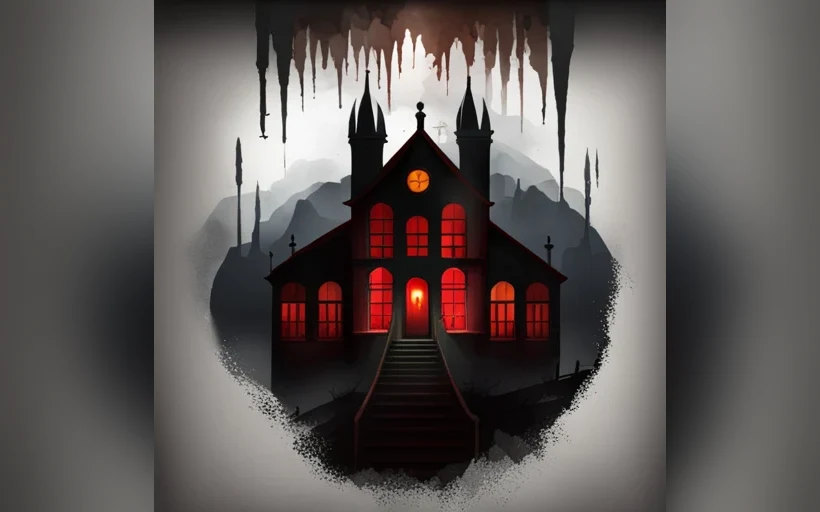

Procedural / EnvironmentThe Forgotten Asylum
Atmospheric horror environment built around exploration, puzzle flow and visual storytelling.
- Environment
- Designed atmospheric 3D spaces — corridors, rooms and interactive areas — that fit the horror theme.
- Levels
- Planned level flow, puzzles, navigation and blockouts, balancing exploration, pacing and narrative.
- Assets
- Produced props in Maya and Substance Painter; placed assets to build mood and guide player attention.
- Perf
- Managed polycount and texture budgets; a 2×2 m occlusion culling grid cut draw calls and raised frame rate.